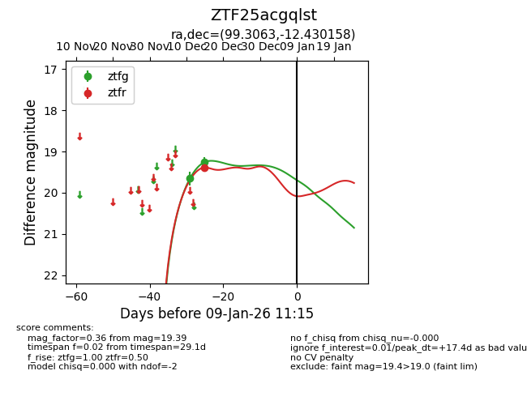
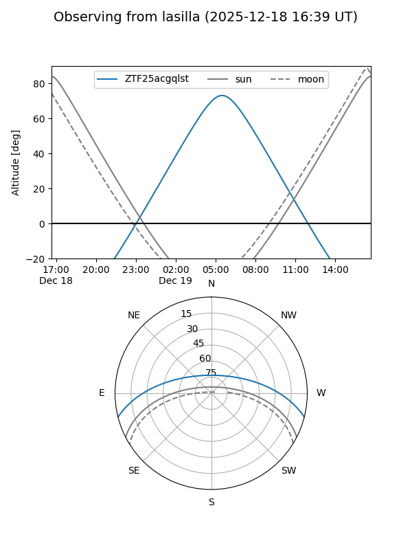
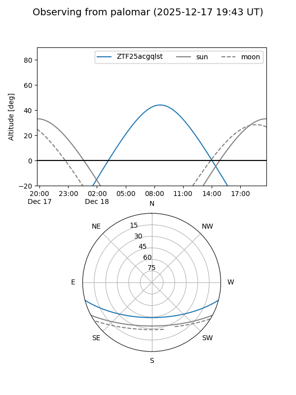

ZTF25acgqlst
Target ZTF25acgqlst at 2025-12-18 11:18
Aliases and brokers:
FINK: fink-portal.org/ZTF25acgqlst
Lasair: lasair-ztf.lsst.ac.uk/objects/ZTF25acgqlst
ALeRCE: alerce.online/object/ZTF25acgqlst
alt names
ZTF25acgqlst (ztf,fink_ztf)
Coordinates:
equatorial (ra, dec) = 99.3063,-12.43016
equatorial (HMS+DMS) = 06:37:13.52,-12:25:48.57
galactic (l, b) = (222.4815,-8.74365)
Photometry
last ztfg=19.26, ztfr=19.39
2 ztfg, 1 ztfr detections
Lightcurve

Visibility


Additional plots